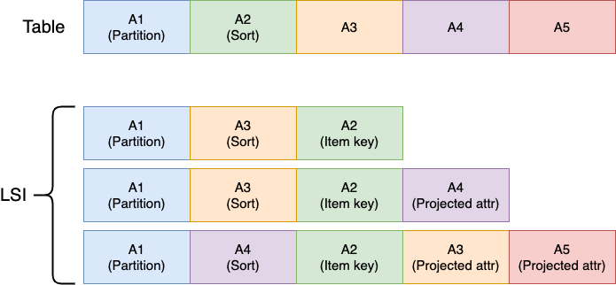
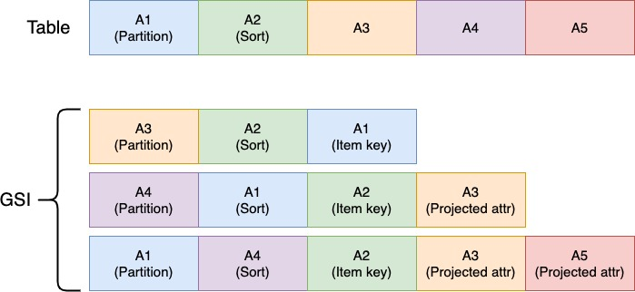

DynamoDB overview

Thinking about it as a hashtable

- Data is stored in a partitioned fashion using a partition key
- Searching without knowing the key is very costly
- If you know the key you can retrieve the data in constant time, no matter how much data you have
DynamoDB works like that

To be honest it looks more like this

Performance

Eventual consistency

Keys & Schema

Searching for data
- 🔑 You search by partition and sort keys, not by attributes.
- ✅ Queries
- ❌ Scans (Please, don't use it)
- 🧐 Because you pay for what you read
Demo time
Indexes
- Local secondary index (LSI)
- Global secondary index (GSI)
Local secondary index (LSI)
Local secondary index (LSI)
- Has to be defined at table creation time
- Can take advantage of consistent reads
- You can only have 5 LSIs per table
- Allows duplicated sort key per partition key
- Have access to non projected attributes
- Locks partition size, the combined size of a partition and its LSIs cannot surpass 10GB
Demo time on LSIs
Global secondary index (GSI)
Global secondary index (GSI)
- Can create at any time
- Supports only eventualy consistent reads
- You can have 20 GSIs per table
- Have access only to projected attributes
Demo time on GSIs
Optimistic locking

DynamoDB transactions
- Support 100 write operations on distinct items
- It is an all or nothing operation
- Can involve items from multiple tables
- The total size of the items cannot exceed 4Mb
Demo time, last one I promise
A well-optimized single-table DynamoDB layout looks more like machine code than a simple spreadsheetForrest Brazeal - AWS Serverless Hero